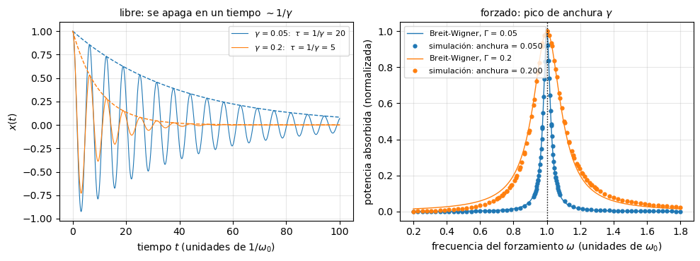
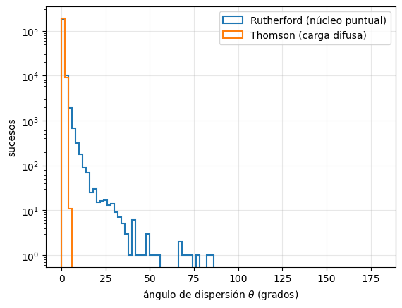

Extensión: Introducción#
Jose A. Hernando
Departamento de Física de Partículas. Universidade de Santiago de Compostela
Septiembre 2026
# Configuración: el código auxiliar está en el paquete notebooks/fnyp/
try:
import fnyp
except ModuleNotFoundError: # en Google Colab hay que traerse antes el repositorio
!git clone -q https://github.com/jahernando/USC-FNyP.git
import sys; sys.path.append('USC-FNyP/notebooks')
from fnyp.inicio import *
Last version Fri Oct 2 18:59:18 2026
1. Anchura#
Complementa la sección ¿Por qué anchura? del tema de Introducción: la curva de Breit-Wigner y su relación con la vida media, \(\Gamma \, \tau = \hbar\).
1.1. El oscilador#
La Breit-Wigner no es exclusiva de la cuántica: es la curva de resonancia de cualquier oscilador con rozamiento, \(\ddot{x} + \gamma \dot{x} + \omega_0^2 x = F(t)\). Tiene dos caras:
Libre. Si se suelta, oscila a \(\omega_0\) y se apaga: la amplitud cae como \(e^{-\gamma t/2}\) y la energía como \(e^{-\gamma t}\). La energía vive un tiempo \(\tau = 1/\gamma\), como la supervivencia \(e^{-t/\tau}\) de una partícula.
Forzado. Si se empuja a una frecuencia \(\omega\), absorbe energía sobre todo cerca de \(\omega_0\). Cerca del pico, la potencia absorbida es una Breit-Wigner de anchura \(\gamma\):
El mismo \(\gamma\) fija lo que dura la oscilación libre y lo ancho que es el pico: anchura × duración = 1. Con poco rozamiento, el oscilador recuerda el empuje mucho tiempo y solo acumula energía si cada empujón llega en fase con el anterior: hay que acertar mucho con la frecuencia. Con mucho rozamiento olvida enseguida, y le da casi igual.
oscilador |
partícula |
|---|---|
frecuencia propia \(\omega_0\) |
masa \(M\) |
rozamiento \(\gamma\) |
\(\Gamma/\hbar = 1/\tau\) |
frecuencia del empuje \(\omega\) |
energía de la colisión \(\sqrt{s}\) |
potencia absorbida \(P(\omega)\) |
sección eficaz \(\sigma(\sqrt{s})\) |
Con \(E = \hbar \omega\), anchura × duración = 1 es \(\Gamma \, \tau = \hbar\).
sim.resonancia(gammas=(0.05, 0.2));
# En clase: descomenta la línea siguiente para ver el barrido en frecuencia animado.
# Ojo: no guardes el notebook con su salida (~1.3 MB).
# sim.resonancia_animada(gamma=0.1)
gamma = 0.050: tau = 1/gamma = 20.0 anchura medida = 0.0501 anchura x tau = 1.003
gamma = 0.200: tau = 1/gamma = 5.0 anchura medida = 0.2003 anchura x tau = 1.001

[>] Taller — Anchura y duración
La simulación integra la ecuación del oscilador. A la izquierda, el oscilador libre; a la derecha, un barrido en frecuencia: para cada \(\omega\) espera a que se apague el transitorio y mide la potencia que absorbe, como OPAL barría \(\sqrt{s}\). La anchura del pico se mide en la simulación, no se toma de la fórmula.
Ejecuta la celda. ¿Cuánto vale anchura × \(\tau\) para cada \(\gamma\)?
Prueba otros rozamientos, por ejemplo
gammas=(0.02, 0.1, 0.4). ¿Qué cambia y qué se mantiene?Con \(\gamma = 0.4\) los puntos se separan de la Breit-Wigner lejos del pico. ¿Por qué? ¿Deja de valer anchura × duración = 1?
Solución
\(1.00\) en los dos casos, dentro de la precisión de la simulación.
Cuanto más rozamiento, antes se apaga el oscilador libre y más ancho es el pico, pero el producto sigue siendo \(1\): \(0.02 \times 50\), \(0.1 \times 10\) y \(0.4 \times 2.5\). Es la misma relación que \(\Gamma \, \tau = \hbar\): el \(Z\), con \(\Gamma_Z = 2.5\) GeV, vive \(2.6 \cdot 10^{-25}\) s, y el leptón \(\tau\), con \(2.9 \cdot 10^{-13}\) s, tiene una anchura de \(2.3 \cdot 10^{-3}\) eV.
La potencia exacta es \(P(\omega) \propto \gamma \omega^2 / [(\omega_0^2 - \omega^2)^2 + \gamma^2 \omega^2]\). La Breit-Wigner sale de aproximar \(\omega_0^2 - \omega^2 \simeq 2 \omega_0 (\omega_0 - \omega)\), que solo vale cerca del pico; con un pico ancho, los puntos alejados ya no están cerca. La anchura, en cambio, sigue siendo exactamente \(\gamma\). Para las partículas pasa lo mismo: la forma de arriba es la aproximación cerca del pico, y para el \(Z\), con \(\Gamma_Z / m_Z \simeq 3\,\%\), se usa una versión relativista en \(s\).
2. Sección eficaz de Rutherford#
Resolución completa del taller Deduce la sección eficaz de Rutherford del tema de Introducción, siguiendo sus pistas. El objetivo es llegar a
sin resolver la órbita: con la conservación de la energía y del momento angular, la simetría de la trayectoria y algo de geometría.
Hipótesis (límite de Rutherford):
el núcleo, de carga \(Ze\), es puntual y está fijo: no retrocede;
la partícula \(\alpha\), de carga \(ze\) y masa \(m\), llega con velocidad \(v_0\) y energía cinética \(E = \frac{1}{2} m v_0^2\);
solo actúa la fuerza de Coulomb (se ignoran los electrones del átomo);
\(b\) es el parámetro de impacto y \(\theta\) el ángulo de dispersión.
|
La figura original del artículo de Rutherford (1911) |

2.1. El cambio de momento#
La colisión es elástica y el núcleo no retrocede, así que la \(\alpha\) sale con la misma energía con la que entra: \(|{\bf p}_i| = |{\bf p}_f| = p = m v_0\).
Los vectores \({\bf p}_i\), \({\bf p}_f\) y \(\Delta {\bf p} = {\bf p}_f - {\bf p}_i\) forman un triángulo isósceles, con ángulo \(\theta\) entre los dos lados iguales. La bisectriz de ese ángulo lo parte en dos triángulos rectángulos, y cada uno tiene un cateto \(|\Delta{\bf p}|/2\) opuesto al ángulo \(\theta/2\):
\(\Delta {\bf p}\) apunta a lo largo de la bisectriz de la trayectoria: la recta que une el núcleo con el punto de máxima aproximación.
2.2. El impulso: la simetría#
El cambio de momento es el impulso de la fuerza, \(\Delta {\bf p} = \int {\bf F} \, \mathrm{d}t\).
Medimos el ángulo polar \(\varphi\) de la \(\alpha\), vista desde el núcleo, a partir de la bisectriz. La fuerza es central, de módulo
y se descompone en una componente a lo largo de la bisectriz, \(F \cos\varphi\), y otra perpendicular, \(F \sin\varphi\).
La trayectoria es simétrica respecto de la bisectriz: a cada punto de la rama de entrada, con ángulo \(-\varphi\), le corresponde uno de la de salida con \(+\varphi\), a la misma distancia \(r\). La componente perpendicular, \(F\sin\varphi\), cambia de signo entre los dos y su integral se anula. Solo queda la componente a lo largo de la bisectriz, que es la dirección de \(\Delta {\bf p}\):
2.3. El momento angular: el \(1/r^2\) desaparece#
La integral en \(t\) exige conocer \(r(t)\), es decir, la órbita. Cambiamos a \(\varphi\).
La fuerza es central, así que el momento angular respecto del núcleo se conserva. Lejos, la \(\alpha\) va en línea recta con velocidad \(v_0\) a una distancia \(b\) del núcleo, y en cualquier punto de la trayectoria:
Sustituyendo en la integral:
El \(r^2\) del cambio de variable cancela exactamente el \(1/r^2\) de Coulomb. La integral ya no depende de la forma de la órbita, solo de sus extremos. Es lo que hace elemental el problema, y solo ocurre para una fuerza que va como \(1/r^2\).
2.4. Los límites: las asíntotas#
La \(\alpha\) viene del infinito y se va al infinito, a lo largo de las dos asíntotas de la trayectoria. Hay que saber qué ángulo forman con la bisectriz.
Las dos asíntotas forman entre sí el ángulo de dispersión \(\theta\): una es la dirección de entrada, y la otra, la de salida. Vistas desde el núcleo, la \(\alpha\) entra por una y sale por la otra recorriendo un ángulo total \(\pi - \theta\) (con \(\theta = 0\), sin desviación, recorre \(\pi\); con \(\theta = \pi\), rebote frontal, vuelve por donde vino). Por simetría, cada asíntota queda a \((\pi - \theta)/2\) de la bisectriz:
y por tanto
2.5. El parámetro de impacto \(b(\theta)\)#
Igualamos las dos expresiones de \(|\Delta {\bf p}|\), la geométrica (apartado 2.1) y la dinámica (apartado 2.4):
Despejando \(b\) y usando \(m v_0^2 = 2E\):
\(d\) es la distancia de máxima aproximación en un choque frontal, en el que toda la energía cinética se convierte en energía potencial de Coulomb. Comprobaciones:
\(\theta \to \pi\) (rebote frontal): \(b \to 0\), la \(\alpha\) va directa al núcleo.
\(\theta = 90°\): \(b = d/2\), el radio del disco del taller El proyectil de 15 pulgadas.
\(\theta \to 0\): \(b \to \infty\), las \(\alpha\) lejanas apenas se desvían.
Cuanto más cerca pasa del núcleo, más se desvía: cada \(b\) corresponde a un único \(\theta\).
2.6. De \(b(\theta)\) a la sección eficaz#
Como cada \(b\) da un único \(\theta\), las \(\alpha\) que llegan dentro de un anillo de radio \(b\) y anchura \(\mathrm{d}b\) salen dentro de un cono de ángulo \(\theta\) y anchura \(\mathrm{d}\theta\). El área del anillo es la sección eficaz de acabar en ese cono, y el cono subtiende un ángulo sólido \(\mathrm{d}\Omega\):
(el valor absoluto porque \(b\) decrece al crecer \(\theta\)). Con \(b = \frac{d}{2}\cot\frac{\theta}{2}\):
y todo se simplifica:
que es la sección eficaz de Rutherford.
2.7. Observaciones#
No es solo conservación. Hacen falta las dos leyes de conservación (pasos 1 y 3), más la simetría del apartado 2.2 y la geometría del apartado 2.4. Pero en ningún momento se resuelve la ecuación de la órbita.
La sección eficaz integrada por encima de un ángulo \(\theta_0\) es el disco de radio \(b(\theta_0)\): \(\sigma(\theta > \theta_0) = \pi \, b(\theta_0)^2 = \pi \frac{d^2}{4} \cot^2\frac{\theta_0}{2}\). Para \(\theta_0 = 90°\) es \(\pi (d/2)^2\), la del taller.
Diverge en \(\theta \to 0\), y la sección eficaz total es infinita: es el alcance infinito de Coulomb. En un átomo los electrones apantallan al núcleo, y las \(\alpha\) que pasan lejos no se desvían.
La fórmula no depende del signo de las cargas: va con \((zZ)^2\). Una carga que atrae daría la misma distribución angular.
La mecánica cuántica da el mismo resultado, un caso excepcional (y afortunado para Rutherford). Con espín y a velocidades relativistas aparece la corrección de Mott.
Deja de valer cuando la \(\alpha\) toca el núcleo: si \(d\) es menor que la suma de los radios nucleares, entra en juego la fuerza fuerte. Para \(\alpha\) de 5 MeV en oro, \(d \approx 45\) fm, frente a unos 9 fm de radios: Rutherford no llegaba a ver el tamaño del núcleo. Con \(\alpha\) más energéticas y núcleos más ligeros se ven desviaciones, y así se midieron los primeros radios nucleares.
2.8. Thomson frente a Rutherford#
Rutherford: «It was quite the most incredible event that has ever happened to me in my life. It was almost as incredible as if you fired a 15-inch shell at a piece of tissue paper and it came back and hit you.» ¿Por qué le sorprendió tanto? El taller compara, con una simulación, los dos modelos de átomo de la época, y estima con la sección eficaz que acabamos de deducir la fracción de \(\alpha\) retrodispersadas.
[>] Taller — El proyectil de 15 pulgadas
Rutherford dijo que ver rebotar una \(\alpha\) fue «casi tan increíble como disparar un obús de 15 pulgadas contra un papel de seda y que volviera y te golpease». Vamos a ver por qué le sorprendió tanto.
La simulación enfrenta dos modelos del átomo con \(\alpha\) de 5 MeV sobre oro:
Thomson: la carga positiva repartida por todo el átomo. Muchas desviaciones minúsculas que se acumulan.
Rutherford: toda la carga concentrada en un núcleo puntual.
¿Qué fracción de partículas se dispersa a más de 90° en cada modelo?
¿Por qué el modelo de Thomson da exactamente cero y no simplemente «muy poco»?
La lámina de Geiger y Marsden tenía \(\sim 4 \cdot 10^{-5}\) cm de oro (\(\rho = 19.3\) g/cm³, \(A = 197\)). Estima con lápiz y papel la fracción de \(\alpha\) que retrodispersan y compárala con el «1 de cada 8000» que midieron.
Pistas para la pregunta 3
La cuenta es una sección eficaz en su forma más desnuda: cuántos blancos ve el proyectil \(\times\) qué área ofrece cada blanco.
Cuántos blancos. La densidad superficial de núcleos, \(n_A = \rho \, N_A \, t / A\), en núcleos/cm². Sigue las unidades: \(\rho t\) es g/cm², dividir por \(A\) da mol/cm², y multiplicar por \(N_A\) da núcleos/cm².
La distancia de máxima aproximación \(d\), en un choque frontal, sale de conservar la energía: toda la energía cinética se convierte en potencial de Coulomb,
con \(z = 2\) para la \(\alpha\) y \(Z = 79\) para el oro.
El área de la diana. El ángulo de dispersión decrece con el parámetro de impacto según \(b = (d/2) \cot(\theta/2)\). Luego retrodispersar, \(\theta > 90°\), es exactamente acertar dentro de un disco de radio \(b_{90} = d/2\):
¡Ojo al factor 2: \(d\) es el choque frontal, \(d/2\) es el radio del disco!
La probabilidad es la fracción de lámina cubierta por esos discos, \(P = n_A \sigma\). Solo vale si \(P \ll 1\): lámina delgada, discos que no se solapan, ninguna \(\alpha\) que rebote dos veces.
Cuidado con las unidades al final: \(1\) fm\(^2 = 10^{-26}\) cm\(^2\).
Solución
Ninguna en el modelo de Thomson; una fracción pequeña, pero no nula, en el de Rutherford.
Porque es una cuestión de cinemática, no de probabilidad. Una \(\alpha\) de 5 MeV contra una carga difusa no puede retroceder ni aunque tenga suerte: no hay nada suficientemente compacto y masivo contra lo que rebotar. La distribución gaussiana de la dispersión múltiple no llega a 90° ni con \(10^{1000}\) sucesos. Por eso el resultado de Geiger y Marsden mató el modelo, en lugar de solo tensarlo.
Núcleos por unidad de área: \(n_A = \rho N_A t / A = 19.3 \cdot 6.02\cdot10^{23} \cdot 4\cdot10^{-5} / 197 \approx 2.4 \cdot 10^{18}\) cm⁻². Con \(d = 2 \cdot 79 \cdot 1.44 / 5 \approx 45.5\) fm, \(\sigma = \pi (d/2)^2 \approx 1.6 \cdot 10^{-23}\) cm². Luego \(P = n_A \sigma \approx 4 \cdot 10^{-5}\), o sea 1 de cada 25 000. Mismo orden de magnitud que lo observado: el modelo del núcleo puntual funciona.
(El
b_maxde la simulación es un parámetro libre que fija la normalización; lo que la simulación demuestra es el contraste entre modelos, no el número absoluto.)
sim.rutherford(n=200000, E_MeV=5., Z_blanco=79);
distancia de máximo acercamiento d = 45.5 fm
fracción dispersada a theta > 90 grados:
Rutherford : 0.00e+00 -> ningún suceso
Thomson : 0.00e+00 -> ningún suceso
